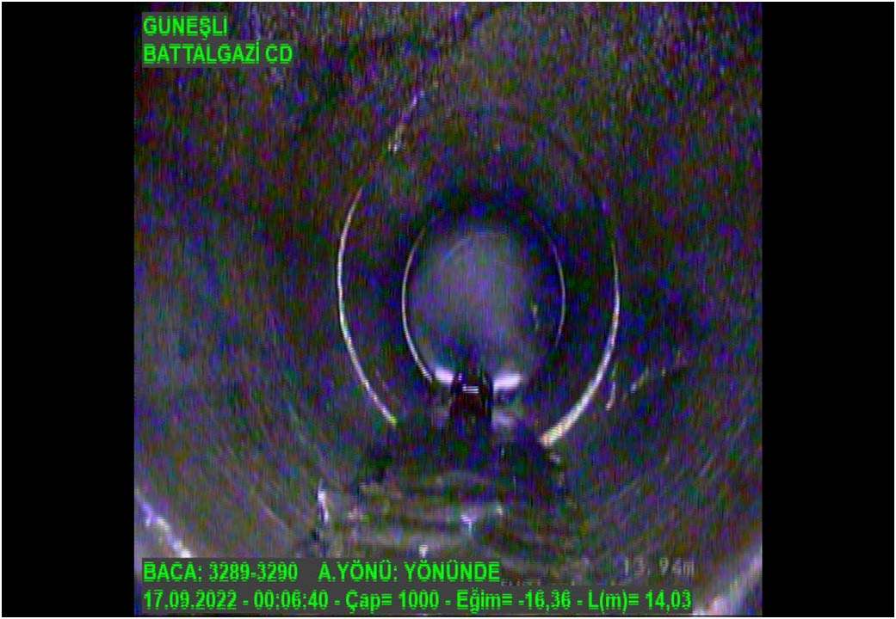
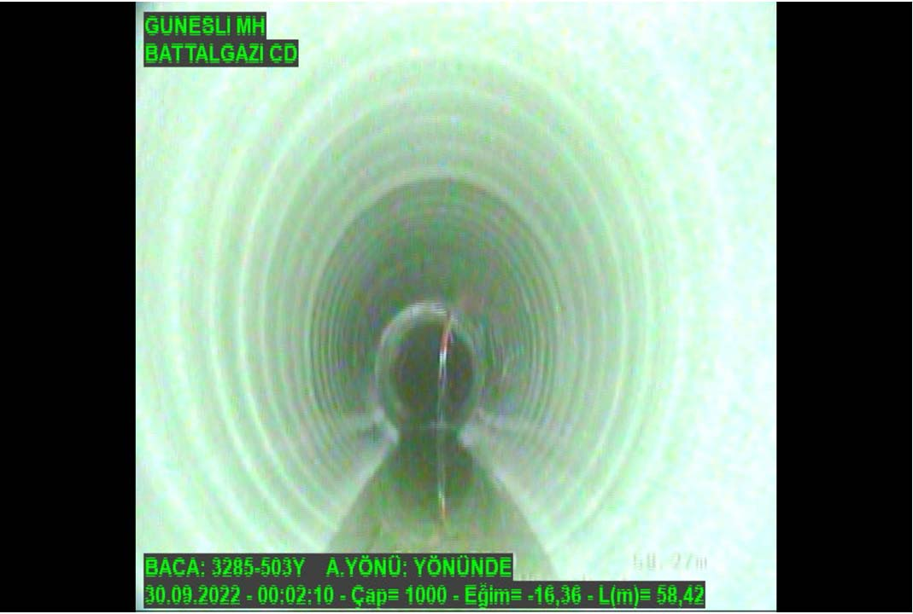
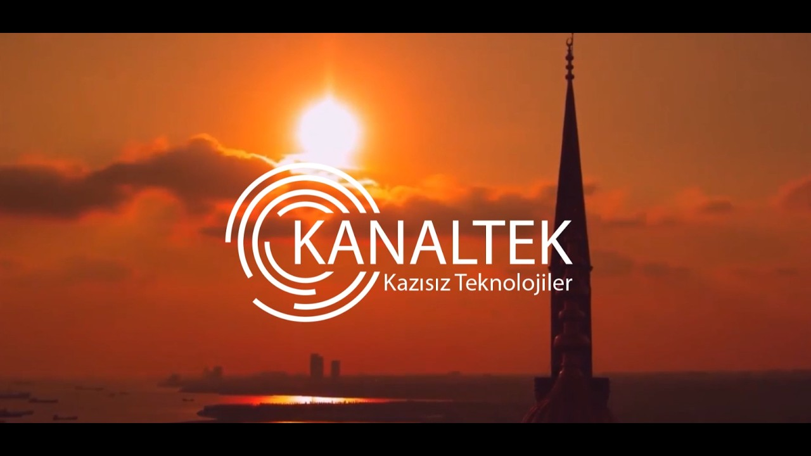
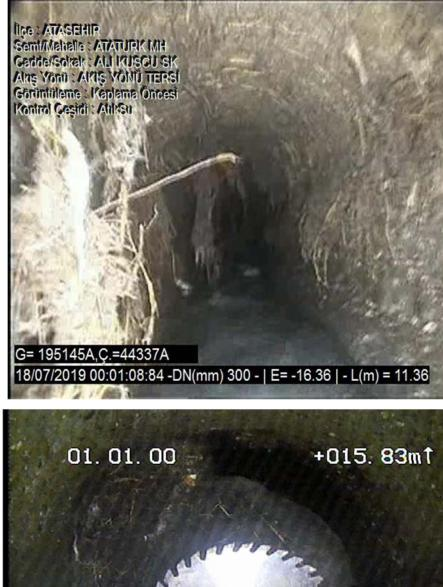

Uygulama Fotoğraf ve CCTV Galerisi
Gerçekleştirdiğimiz projelerde kaplama öncesi hasarlı durum ile kaplama sonrası eksiz yeni boru yapısının CCTV robot kayıtları ve saha fotoğrafları.


Elbistan Atıksu Kolektör Hattı (DN 1000)
CIPP UV Kaplama Öncesi çatlaklar ve sonrasında cam gibi pürüzsüz yeni boru.

Kanaltek Kazısız Teknolojiler Saha Uygulaması
CIPP UV robotik kaplama ve Fold & Form sahasında boru rehabilitasyon uygulamaları.

Ataşehir Fold & Form PVC Kaplama (DN 300)
Yüksek buharla şekillendirilen termoform PVC liner ile hidrolik debi artışı.

UV Kürleme Robotu (Işın Treni)
Ultraviyole ışık dalgalarıyla reçine dakikalar içinde monolitik sertleşir.

Büyük Çap Kolektör Hattı (DN 1400)
DN1400 – DN2000 dev çaplarda hat içine girmeden ve kazmadan güvenli kaplama.
Mobil Buhar / Sauna Kamyonu & Boyler
Katlanmış PVC liner sahada buharla ısıtılarak esnetilir ve hat içerisine çekilir.
Hattınız İçin Hemen Bilgi ve Destek Alın
Mevcut kanalizasyon hattınızın çapını, metrajını veya fotoğrafını iletin; mühendislerimiz en uygun yöntemi değerlendirsin.